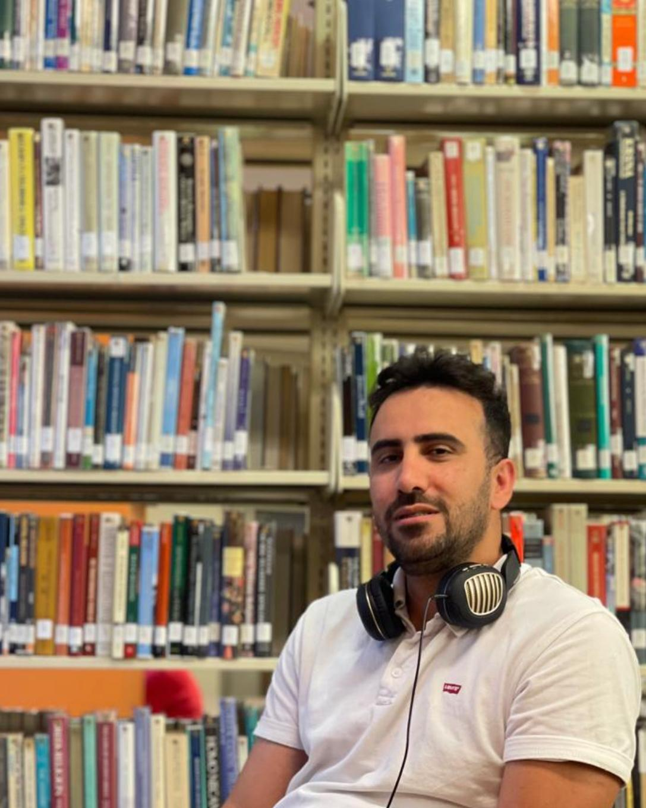

رضا محمدزاده
متولد ۵ آوریل ۱۹۸۵
مهندسی صنایع - دانشگاه ویندزور، کانادا
مهندسی مکانیک - دانشگاه آزاد تهران

– تو میخواهی رازها را بدانی؟
– من نمیخواهم فقط بدانم، میخواهم بفهمم.
– فهم، سفریست از سؤال به سکوت…
کوهها آرام گرفتند، ذرات رقصیدند، و جهان نَفَس کشید.
در دل سکوت، صدایی شنیده شد:
– آیا در پایان همهی علم، به خدا میرسیم؟
– نه، به آغاز او…
و در هر بیت حافظ، و در هر موج نور، صدای اوست:
«من رحمانم، من رحیمم... هیچ دادهای برای همیشه گم نمیشود.»
شاعران بزرگ فارسی
- مولانا جلالالدین بلخی (رومی)
- حافظ شیرازی
- سعدی شیرازی
- فردوسی
- خیام نیشابوری
- باباطاهر
- نظامی گنجوی
- شهریار
- سهراب سپهری
Reza Mohammadzadeh
Born: April 5, 1985
Industrial Engineering – University of Windsor, Canada
Mechanical Engineering – Azad University, Tehran
– Do you want to know the secrets?
– I don’t just want to know. I want to understand.
– Understanding is a journey from questions to silence...
The mountains hushed, particles danced, and the universe exhaled.
And in the stillness, a voice whispered:
– Will we reach God at the end of science?
– No. We will reach His beginning.
And in every verse of Hafez, in every quantum wave, His voice echoes:
“I am the Merciful, the Compassionate... no data is ever truly lost.”
Great Persian Poets
- Rumi (Molana Jalaluddin)
- Hafez
- Saadi
- Ferdowsi
- Khayyam
- Baba Taher
- Nezami
- Shahriar
- Sohrab Sepehri